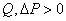
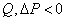
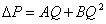
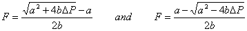
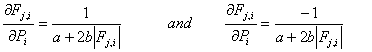
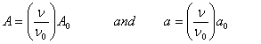
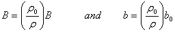
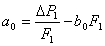

Baker, Sharples, and Ward [Baker 1987] indicate that infiltration openings can be more accurately modeled by a quadratic relationship of the form
|
 |
 |
|
|
 |
|
(37) |
This form can be used as an airflow element by solving the quadratic equation for F (= rQ). Letting a = A/r and b = B/r2 allows equations (37) to be rewritten as

|
(38) |
These quadratic equations solve as
|
 |
(39) |
with the partial derivatives given by
|
 |
(40) |
Equations (39) require that b be nonzero to prevent a division by zero and equations (40) requires that a be nonzero to prevent a division by zero as F goes to zero. There are contrary opinions that the powerlaw relationship is better.
It is useful to think of the coefficients a and b as simple constants evaluated at a particular set of conditions (m0, r0 and n0=m0/r0) multiplied by correction factors to account for actual air properties as was done for the powerlaw equations. That is
|
 |
(41) |
and
|
 |
(42) |
Note that r0/r = T/T0 for a perfect gas of constant composition.
The quadratic coefficients can also be computed from measured flow and pressure data. Given two points (F1, DP1) and (F2, DP2), the values of a0 and b0 are:

|
(43) |
and
|
 |
(44) |
The main advantage of the quadratic model over the powerlaw model is computation speed achieved by avoiding the slow power function. (Tests have shown pow(x) four to eight times slower than sqrt(x). This performance is hardware and software dependent.) It must still be determined which model is the most accurate representation for a particular airflow element. For example, it has been found that the powerlaw model is a better approximation for smooth ducts while the quadratic model is a better approximation for rough ducts. However, for very large openings the derivatives (40) can become quite large leading to slow convergence of the simultaneous mass balance equations.
Theoretical relationships have been developed between the coefficients A and B of the quadratic airflow element model and the physical characteristics of the openings [Baker 1987]. These are

|
(45) |
where
m= viscosity,
r= density,
z= distance along the direction of flow,
d= crack width,
L= crack length, and
C= 1.5 + number of bends in the flow path.
For the mass flow form of the equations (38) the coefficients are

|
(46) |